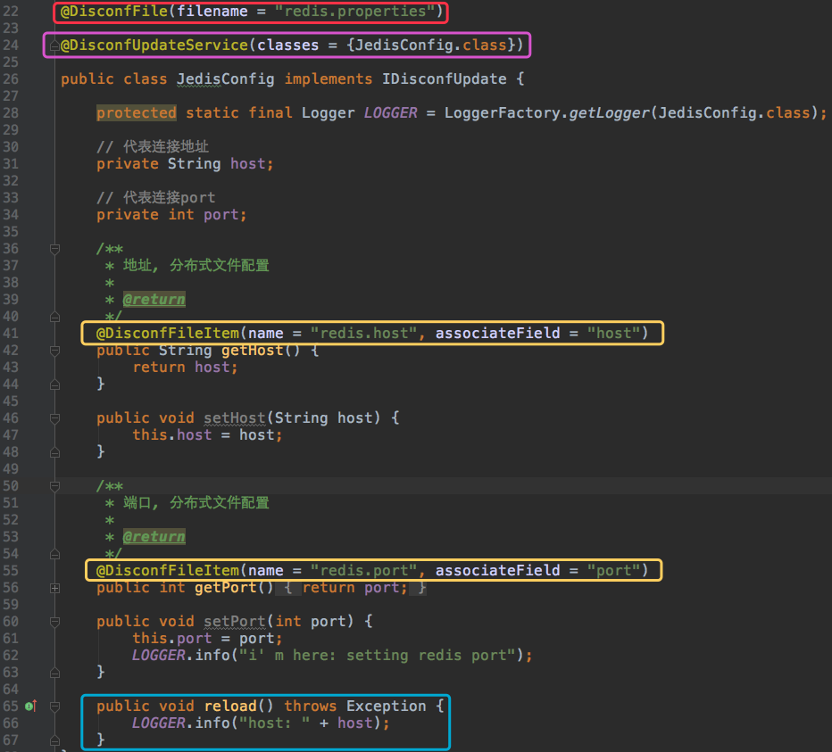
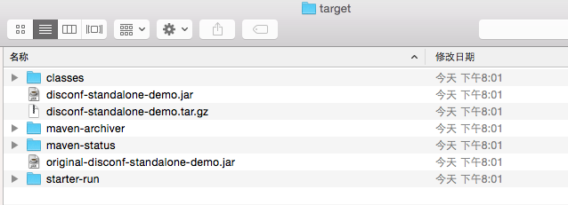

原文连接:https://www.cnblogs.com/bolingcavalry/p/11510316.html
Docker下的disconf实战全文链接
- 《Docker搭建disconf环境，三部曲之一：极速搭建disconf》；
- 《Docker搭建disconf环境，三部曲之二：本地快速构建disconf镜像》；
- 《Docker搭建disconf环境，三部曲之三：细说搭建过程》；
- 《Docker下使用disconf：极速体验》；
- 《Docker下使用disconf：细说demo开发》；
细说demo开发
在上一章《docker下使用disconf：极速体验》中我们体验了disconf服务的使用方获取配置以及实时感知到这个配置变化的效果，今天我们一起来实践这个demo的开发过程，学会在项目中使用disconf服务。
此demo源于disconf官网的demo(git地址:git@github.com:knightliao/disconf-demos-java.git，下有三个工程，此文的demo源自其中的disconf-standalone-demo)，官方demo展示了大而全的功能，做为初学者的我花了不少时间去看，因此我就基于官方代码做了精简，精简后的代码旨在快速为初学者展示最基本的远程配置和实时感知配置变化的能力，若要系统的学习disconf的各类服务，还请自行研究官方文档和demo。
本文demo的源码在git@github.com:zq2599/blog_demos.git，下载后的里面有多个工程，下图红框中的工程才是本文的demo：
接下来我们看看调用disconf服务需要哪些步骤：
- 由于这是个maven工程，所以首先要确定依赖包，我们用到的主要有disconf的库，以及spring和日志等常用库，如下：
<dependencies>
<dependency>
<groupId>com.baidu.disconf</groupId>
<artifactId>disconf-client</artifactId>
<version>2.6.36</version>
</dependency>
<dependency>
<groupId>commons-io</groupId>
<artifactId>commons-io</artifactId>
<version>1.4</version>
</dependency>
<dependency>
<groupId>commons-lang</groupId>
<artifactId>commons-lang</artifactId>
<version>2.4</version>
</dependency>
<dependency>
<groupId>org.slf4j</groupId>
<artifactId>slf4j-api</artifactId>
<version>1.7.6</version>
</dependency>
<dependency>
<groupId>ch.qos.logback</groupId>
<artifactId>logback-core</artifactId>
<version>1.0.9</version>
</dependency>
<dependency>
<groupId>ch.qos.logback</groupId>
<artifactId>logback-classic</artifactId>
<version>1.0.9</version>
</dependency>
<dependency>
<groupId>org.springframework</groupId>
<artifactId>spring-context</artifactId>
<version>4.1.7.RELEASE</version>
</dependency>
</dependencies>maven的构建插件是作者自定义的，除了基本功能，还生成了一些脚本工具，我们直接使用：
<plugin>
<groupId>com.github.knightliao.plugin</groupId>
<artifactId>starter-shade-maven-plugin</artifactId>
<version>1.0.0</version>
<executions>
<execution>
<phase>package</phase>
<goals>
<goal>shade</goal>
</goals>
<configuration>
<finalName>${project.build.finalName}</finalName>
<transformers>
<transformer
implementation="org.apache.maven.plugins.shade.resource.ManifestResourceTransformer">
<mainClass>com.example.disconf.demo.DisconfDemoMain</mainClass>
</transformer>
<transformer
implementation="org.apache.maven.plugins.shade.resource.DontIncludeResourceTransformer">
<resources>
<resource>env</resource>
<resource>disconf.properties</resource>
<resource>logback.xml</resource>
</resources>
</transformer>
<transformer
implementation="org.apache.maven.plugins.shade.resource.AppendingTransformer">
<resource>META-INF/spring.handlers</resource>
</transformer>
<transformer
implementation="org.apache.maven.plugins.shade.resource.AppendingTransformer">
<resource>META-INF/spring.schemas</resource>
</transformer>
</transformers>
</configuration>
</execution>
</executions>
</plugin>程序入口是DisconfDemoMain类，里面的main方法初始化spring环境，启动一个while死循环，每隔五秒将JedisConfig实例的host和port属性打印到终端；
JedisConfig的host和port属性，是被disconf的runtime环境控制，可以实时被设置成最新的配置值，对应的远程配置和具体的属性字段，都是通过注解来完成的：

如上图所示：
红框中的DisconfFile注解将该类和disconf服务端的redis.properties配置绑定;
黄框中的DisconfFileItem注解将host和port属性与redis.properties配置的host，port属性绑定;
紫框中的DisconfUpdateService注解向disconf运行时注册了配置变化的实时广播监听，当配置发生变化时，蓝框中的reload方法会被disconf运行时调用；
SimpleRedisServiceUpdateCallback类的作用也是注册广播监听，当配置发生变化时，蓝框中的reload方法会被disconf运行时调用；
除了代码，还要关注disconf.properties文件:
# 是否使用远程配置文件
# true(默认)会从远程获取配置 false则直接获取本地配置
disconf.enable.remote.conf=true
#
# 配置服务器的 HOST,用逗号分隔 127.0.0.1:8004,127.0.0.1:8004
#
disconf.conf_server_host=nginxhost:80
#disconf.conf_server_host=127.0.0.1:80
# 版本, 请采用 X_X_X_X 格式
disconf.version=1_0_0_0
# APP 请采用 产品线_服务名 格式
disconf.app=disconf_demo
# 环境disco
disconf.env=rd
# 忽略哪些分布式配置，用逗号分隔
disconf.ignore=
# 获取远程配置 重试次数，默认是3次
disconf.conf_server_url_retry_times=1
# 获取远程配置 重试时休眠时间，默认是5秒
disconf.conf_server_url_retry_sleep_seconds=1
# 用户指定的下载文件夹, 远程文件下载后会放在这里
disconf.user_define_download_dir=./disconf/download2
# 下载的文件会被迁移到classpath根路径下，强烈建议将此选项置为 true(默认是true)
disconf.enable_local_download_dir_in_class_path=trueconf_server_host的值在此处配置成nginxhost,这个和docker容器启动时配置的nginx的link别名一致，这样demo就能访问到disconf服务器了；
- disconf在demo上的运行时环境，是通过spring配置来实现的，如下：
<context:component-scan base-package="com.example"/>
<aop:aspectj-autoproxy proxy-target-class="true"/>
<!-- 使用disconf必须添加以下配置 -->
<bean id="disconfMgrBean" class="com.baidu.disconf.client.DisconfMgrBean"
destroy-method="destroy">
<property name="scanPackage" value="com.example.disconf.demo"/>
</bean>
<bean id="disconfMgrBean2" class="com.baidu.disconf.client.DisconfMgrBeanSecond"
init-method="init" destroy-method="destroy">
</bean>disconfMgrBean复制核心管理，disconfMgrBean2负责启动定时扫描和实现销毁时的回调。
- 配置好这些，打开控制台，在pom.xml文件所在目录下执行mvn clean package -U，即可完成打包，这时候进入target目录，可以看到执行结果如下图：

- 打开上图中的starter-run文件夹中的start.sh文件，最下面一行内容如下：
nohup java $JAVA_OPTS -jar ${CUR_BUNDLE_NAME} >> log_`date +%s`.log 2>&1 &这个命令会启动java进程，并且把输出信息重定向到日志文件中，这样就不便于我们观察demo的运行效果，动手把这一行修改如下：
java $JAVA_OPTS -jar ${CUR_BUNDLE_NAME}这样所有的日志都会在控制台打印出来，便于我们观察运行状态；
- 打包完成了，现在可以开始制作镜像了，这里的基础镜像我选用的是tomcat:7.0.77-jre8，是为了图个方便，不用安装jdk和配置java环境了，dockerfile内容非常简单，创建一个工作目录，把前面打包时生成的starter-run文件夹下的所有东西都复制到这个工作目录中去：
# Docker image of disconf consumer
# VERSION 0.0.1
# Author: bolingcavalry
#基础镜像使用tomcat:7.0.77-jre8
FROM tomcat:7.0.77-jre8
#作者
MAINTAINER BolingCavalry <zq2599@gmail.com>
#定义工作目录
ENV WORK_PATH /usr/local/work
#创建工作文件夹
RUN mkdir -p $WORK_PATH
#复制应用包到工作文件夹
COPY ./starter-run $WORK_PATH/打开终端，在dockerfile的目录下执行以下命令生成镜像:
docker build -t local_disconf_standalone_demo:0.0.1 .- 新建一个docker-compose.yml文件，内容如下所示：(这里要重点注意的是disconf_java的link配置，除了连接disconf_nginx，还要连接disconf_zookeeper，否则启动demo的时候会提示watcher启动失败，导致在disconf服务端修改配置后，demo收不到配置更新的广播)：
version: '2'
services:
disconf_redis_1:
image: daocloud.io/library/redis
restart: always
disconf_redis_2:
image: daocloud.io/library/redis
restart: always
disconf_zookeeper:
image: zookeeper:3.3.6
restart: always
disconf_mysql:
image: bolingcavalry/disconf_mysql:0.0.1
environment:
MYSQL_ROOT_PASSWORD: 123456
restart: always
disconf_tomcat:
image: bolingcavalry/disconf_tomcat:0.0.1
links:
- disconf_redis_1:redishost001
- disconf_redis_2:redishost002
- disconf_zookeeper:zkhost
- disconf_mysql:mysqlhost
restart: always
disconf_nginx:
image: bolingcavalry/disconf_nginx:0.0.1
links:
- disconf_tomcat:tomcathost
ports:
- "80:80"
restart: always
disconf_java:
image: local_disconf_standalone_demo:0.0.1
links:
- disconf_nginx:nginxhost
- disconf_zookeeper:zkhost
restart: always - 在docker-compose.yml文件所在目录下执行命令docker-compose up -d，启动所有容器，如下图：
执行命令08_disconf_java_1进入容器，再进入/usr/local/work目录，执行./start.sh启动demo，即可看到disconf本地运行时的启动信息，以及每隔5秒一次的输出配置信息；
在浏览器上输入localhost，登录disconf，用户名密码都是admin，修改对应的配置项，在docker容器08_disconf_java_1的控制台即可看到对应的输出，具体操作方法请参照上一章《docker下使用disconf：极速体验》
本章用到的docker镜像的制作材料也已经上传到git上，地址：git@github.com:zq2599/docker_disconf.git，目录如下图红框：
至此，一个使用disconf的demo已经完成了开发和使用，这只是给大家带来初步的认识，deisonf的配置服务是很丰富的，大家可以在官网的文档和demo中获取更详细的信息。
欢迎关注我的公众号